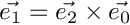
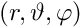

|
GOAT (Geometrical optics application tool)
0.1
|
| ▼CDetector | |
| CDetectorPlane | |
| CEinschlussInfo | |
| CGauss | |
| CGlobalParms | |
| ▼CLightSrc | This abstract class is the basic class for all light sources used in this raytracing library. It provides all necessary interfaces |
| CLightSrcGauss | This class describes a focused gaussian beam |
| CLightSrcPlane | Class derived from LightSrc. It represents a plane wave described by the electric field  |
| CMatrix< T > | This class represents a threedimensional (numeric) Matrix as Template |
| CMatrix< double > | |
| CMatrix< std::complex< double > > | |
| ▼CObjectShape | Abstract base class for all volume objects This abstract class provides a template for all volume objects. The refractive index is complex to be able to consider absorption |
| CBox | Class which represents a box (cuboid). It is derived by class ObjectShape This class is mainly used for the octree calculation |
| CEllipsoid | This class represents an ellipsoid, defined by its half axis a, b and c according to the formula:  |
| Csurface | This class represents objects those surface is described by triangles |
| COctree< T > | This template class is used for internal purposes and represents an octree |
| COptProp | |
| CPlane | This class is used for the iray class. This class is intended for internal use only. It defines a plane, defined by a central position and two directional vectors |
| CPoint | |
| ▼CRayBase | |
| ▼CIRay | This class represents a single ray |
| CRay_pow | |
| CtubedRay | |
| ▼CRaytrace | This class provides all functionalities for the base raytracing code. It follows all rays from all light sources through the scene. |
| CRaytrace_OT | This class provides functionality to calculate the forces for optical tweezers. It is derived by the class Raytrace |
| CRaytrace_Path | Class which stores the start and end points of each step into a file |
| CRaytrace_pure | |
| CRRTParmsInfo | |
| CScene | Class defining a scene with lightsources and objects. This is a container used to inform the Raytracer about all necessary settings. Here, all informations about light sources and objects are stored. Light sources are described by classes derived from the virtual LightSrc base class. All objects are described by classes derived from the virtual class ObjectShape |
| CStrahlArray | |
| CStrahlInfo | |
| Ctriangle | This class describes a triangle, represented by its corner points. It is intented for internal purposes. The triangle class is mainly used in class surface |
| CtubedRayBuffer | |
| CVector< T > | Template class for threedimensional vectors |
| CVector< double > | |
| CVector< std::complex< double > > |